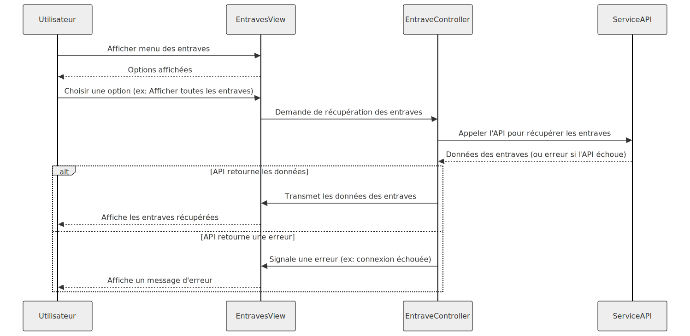
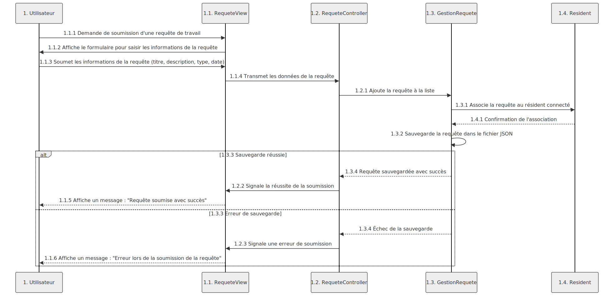
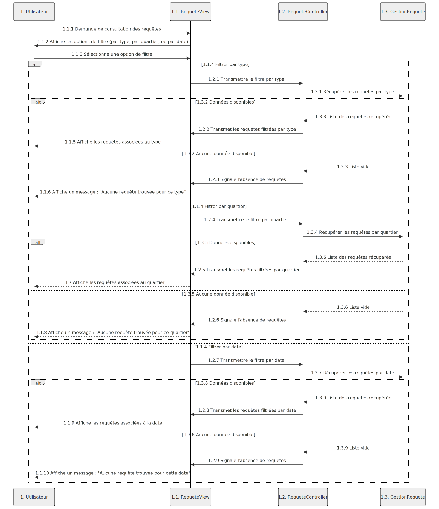

Cadre du projet
Introduction
Les résidents de la ville de Montréal sont souvent pris par surprise lorsqu’ils leur arrivent de
prendre la route et de se retrouver face à des embouteillages
imprévus et de devoir modifier
leur itinéraire. Pour cause, les chantiers et les travaux ne sont que rarement annoncés
correctement et à temps.
Bien que les habitants de Montréal aient accès au service Infos
entraves et travaux, celui-ci se trouve être limité et manque d'éfficacité.
C’est donc dans ce contexte qu’une proposition emerge : l’application MaVille. Celle-ci
permettra d’améliorer plusieurs aspects très importants:
la communication entre résidents et
intervenants publics et privés, la diffusion d’informations adéquates sur les travaux en cours ainsi
que la
participation active des résidents.
Échéancier
Présentation de l'échéancier et la distribution des tâches à partir du devoir 1 (MA: pour Maria, RH: pour Reem et MAEM: pour Mohammed Amine)
| 1 | 2 | 3 | 4 | 5 | 6 | 7 | 8 | 9 | 10 | 11 | 12 | 13 | 14 | 15
MA, RH, MAEM ###### (Questions)
RH ############# (Glossaire)
MA, RH ############ (Diagramme de CUs + scénarios)
MAEM, RH ########### (Diagramme d'activités)
MA ################# (Prototype)
RH #### (README)
MAEM ######## (Analyse)
MA, RH, MAEM ############ (Rédaction du rapport TP1)
RH ############### (Architecture + choix de design)
MAEM ############## ( Diagramme de classes + séquences)
MA ####################################### (Implémentation et tests)
MA, RH, MAEM ############ (Rédaction du rapport TP2)
MA, RH ############## (Update de la conception)
RH, MA ######################## (Implementation + tests)
MA, RH #######################################(Rédaction du rapport TP3)
MA, RH ############################# (Documentation)
Distribution claire des rôles VS ce qu'on a fini par faire
Présentation de comment on s'était départagé les tâches pour ce librable 3
Maria Alitouche: Implémentation de Soumettre/soustraire sa candidature, Faire le suivi de sa candidature, Chercher/filtrer les entraves par rue, faire le suivi
d'une requêtee de travail, écriture de tests unitaires
Reem Habib: Implémentation de Consulter les travaux en cours, Consulter les travaux à venir, Modifier ses préférences horaires, Soumettre un projet, écriture de
tests unitaires, mis à jour de l'architecture et diagramme de CU
Mohammed Amine El Masdouki: Implémenation de Voir ses notifications, Modifier statut du projet, l'écriture de 6 tests unitaires, la mise à jour des diagrammes
de séquences et du diagramme de classe.
------------------------VS CE QU'ON A FINI PAR FAIRE: ------------------
Maria Alitouche: Implémentation de Soumettre/soustraire sa candidature, Faire le suivi de sa candidature, Chercher/filtrer les entraves par rue, faire le suivi
d'une requêtee de travail, écriture de tests unitaires, mis à jour des diagrammes de séquence et du diagramme de classe, JaCoCo
Reem Habib: Implémentation de Consulter les travaux en cours, Consulter les travaux à venir, Modifier ses préférences horaires, Soumettre un projet, écriture de
tests unitaires, mis à jour de l'architecture et diagramme de CU, vidéo pour documentation, JavaDoc
Mohammed Amine El Masdouki: Rien. Il a essayé de faire hier Notifications mais ça ne marchait pas on a dû l'enlever avant la remise vu que ça plantait l'application
Exigences
Après de nombreuses rencontres avec le client et une familiarisation avec les activités de recyclage et compostage, nous avons préparé un glossaire rassemblant les termes et expressions clés caractérisant l'environnement.
Glossaire
- Application MaVille
- Est une application que nous avons créé dans le cadre du cours IFT2255 pour avoir une meilleure communication des activités et travaux prévus et entrepris par les intervenants
de la ville de Montréal, ainsi que permettre une planification plus inclusive des citoyens. - Résident
- Est une personne physique et un utilisateur de l'application MaVille qui habite un quartier ou une zone géographique gérée par la ville.
- Intervenant
- Dans ce contexte nous parlons de la Ville, ses partenaires, les promoteurs immobiliers, les entrepreneurs privés et les particuliers
qui ont la responsabilité d'effectuer des travaux suite à une requête soumise par un résident ou un projet planifié par l'un d'entre eux. - la Ville
- Entité publique principale responsable de la gestion des infrastructures, des travaux routiers, de l'entretien des espaces publics...
Elle coordonne les projets et peut intervenir directement via ses propres services comme les services municipaux. - Partenaire de la Ville
- Organisations ou entreprises qui collaborent avec la Ville pour la réalisation de projets. Cela peut inclure des sociétés de services
publics, des entreprises spécialisées dans les travaux publics... - Promoteurs immobiliers
- Entreprises ou individus responsables de la construction ou du développement de nouveaux bâtiments et infrastructures. Ils sont souvent impliqués
dans les grands chantiers urbains comme les immeubles, complexes résidentiels... - Entrepreneurs privés
- Entreprises ou individus du secteur privé qui soumettent des candidatures pour effectuer des travaux ou des projets pour la Ville ou pour des résidents.
Ils peuvent réaliser des travaux spécifiques tels que la construction, la rénovation, l'entretien de routes... - Particuliers
- Individus agissant en leur propre nom, et non en tant qu'entreprise ou entité juridique. Ils peuvent être des propriétaires, des locataires ou des citoyens
qui prennent des décisions ou entreprennent des actions concernant leurs biens privés, ou qui interagissent avec les services publics pour des besoins personnels - Travaux routiers
- Projets ou interventions liés à la construction, la réparation ou l'entretien des routes.
- Travaux de gaz ou électricité
- Projets liés à la maintenance ou l'installation de réseaux de distribution de gaz ou d'électricité, incluant la pose de conduites ou de câblages.
- Construction
- Création de nouvelles structures ou infrastructures, comme des bâtiments, des routes, des ponts, ou des réseaux de services publics...
- Rénovation
- Travaux visent à restaurer ou améliorer des structures existantes sans les démolir complètement.
- Entretien paysager
- Travaux destinés à maintenir, améliorer ou restaurer des espaces verts ou des aménagements extérieurs
- Travaux liés aux transports en commun
- Travaux concernent les infrastructures et équipements utilisés pour les transports publics comme les bus, les trains, les métros...
- Signalisation
- Travaux concernent la mise en place, la réparation ou la mise à jour des signaux routiers comme les panneaux de circulation, feux de signalisation
ou d'autres dispositifs de sécurité routière. - Éclairage
- Travaux incluant l’installation, l’entretien ou la réparation des lampadaires et des systèmes d’éclairage public dans les rues, les parcs, ou sur les autoroutes
- Travaux souterrains
- Travaux se déroulant sous la surface de la terre et concernent les réseaux d’infrastructure essentiels comme
les conduites d'eau, les égouts, les câbles électriques ou les conduites de gaz - Travaux résidentiels
- Travaux effectués au sein de propriétés résidentielles privées, comme la construction ou la rénovation de maisons, d’appartements, ou d’immeubles d'habitation...
- Entretien urbain
- Regroupe toutes les activités nécessaires pour maintenir en bon état les espaces publics d'une ville, comme les routes, les trottoirs, les parcs, les bâtiments publics...
- Entretien des réseaux de télécommunication
- Travaux concernent la maintenance, la réparation ou l'amélioration des infrastructures de télécommunication, comme les câbles à fibres optiques...
- Infos Entraves et Travaux
- Infos qui permettraient aux résidents et autres utilisateurs de l'application MaVille de consulter des informations détaillées sur les perturbations temporaires causées par des travaux ou des événements affectant la circulation et les activités quotidiennes dans leur quartier ou dans d'autres zones de la ville.
- Statut des projets
- État actuel d’un projet de travaux, qui peut inclure des statuts comme "prévu", "en cours", "suspendu", ou "terminé", permettant de suivre l’évolution du projet.
- Planification participative
- Processus de prise de décision collaboratif dans lequel les résidents peuvent exprimer leurs préférences et fournir des informations sur les plages horaires idéales
pour la réalisation des travaux dans leur quartier. Celà permet d'inclure les résidents de la ville dans la planification pour maximiser la satisfaction et minimiser les conflits d'intérêts - Code de la ville
- Identifiant unique à huit chiffres utilisé pour reconnaître un intervenant enregistré auprès de la ville
- Requête de travail
- Demande soumise par un résident pour qu'un intervenant effectue un travail spécifique.
- Notification personnalisée
- Alerte que le résident peut recevoir par rapport aux changements rapportés à son quartier ou d'autres auquels le résident est abonné.
Personnes, entités, entreprises et organisations
Types de travaux
Informations générales
Cas d'utilisation
Notes à propos du diagramme
- choix des acteurs: Résident et Intervenant en tant qu'acteurs pricipaux et service des infrastructures comme secondaire
- choix des relations: utilisation d'include et extends
Scénarios
Scénarios concernant le résident
Scénario principal
- Le résident a accès au menu principal et choisit l'option S'inscrire.
- Le résident fournit les informations nécessaires (nom, adresse courriel, date de naissance,mot de passe, téléphone, adresse résidentielle).
- Le système valide les informations.
- Le système confirme l'inscription (champs obligatoires remplis, courriel et âge valide).
- Le système affiche les informations recueillies lors de l'inscription et confirme l'inscription.
Scénarios alternatifs
Scénario principal
- Le résident se connecte en choisissant l'option se connecter en tant que résident.
- Le résident choisit l'option Consulter les travaux en cours ou à venir dans le menu principal.
- Le système affiche la liste des travaux en cours.
- Le résident choisit de filtrer la liste des travaux.
- Le résident choisit les filtres voulus.
- Le système affiche la liste des travaux en fonction des filtres.
- Le résident parcourt la liste des travaux.
Scénarios alternatifs
Scénario principal
- Le résident se connecte en choisissant l'option se connecter en tant que résident.
- Le résident choisit l'option Rechercher des travaux dans le menu principal.
- Le système affiche les filtres possibles (titre, type de travaux, quartier).
- Le résident choisit le filtre et saisit dans le champ sa recherche de travaux.
- Le résident soumet la recherche.
- Le système affiche la liste correspondante.
Scénarios alternatifs
Scénario principal
- Le résident se connecte en choisissant l'option se connecter en tant que résident.
- Le résident a accès au menu principal et choisit l'option Soumettre une requête.
- Le résident fournit les informations nécessaires à sa requête (titre, description, type, date de début souhaité).
- Le système valide les informations.
- Le système confirme la reception de la requête.
Scénarios alternatifs
Scénario principal
- Le résident se connecte en choisissant l'option se connecter en tant que résident.
- Le résident sélectionne la requête qu'il veut consulter.
- Le système affiche la candidature de l'intervenant.
- Le résident accepte la candidature pour la requête de travail.
- L'intervenant sera notifié de l'acceptation de candidature.
Scénarios alternatifs
Scénario principal
- Le résident se connecte en choisissant l'option se connecter en tant que résident.
- Le résident a accès au menu principal et choisit l'option Permettre une planification participative.
- Le résident choisit l'option Choisir votre préférence de plages horaires.
- Le résident choisit et enregistre ses préférences de plages horaires.
- Le système met à jour les informations sur les préférences.
- Le système rend disponible les informations sur les préférences aux autres utilisateurs.
Scénarios alternatifs
Scénario principal
- Le résident se connecte en choisissant l'option se connecter en tant que résident.
- Le résident ouvre la zone Notifications au dessus du menu.
- Si une notification est présente, le résident la voit.
Scénarios alternatifs
Scénario principal
- Le résident se connecte en choisissant l'option se connecter en tant que résident.
- Le résident ouvre la zone Notifications au dessus du menu.
- Le résident sélectionne l'option Personnaliser ses notifications.
- La liste de quartiers s'affiche.
- Le résident sélectionne le ou les quartiers voulus.
- Le système enregistre le choix du résident.
Scénarios alternatifs
Aucun.
Scénarios concernant les intervenants
Scénario principal
- L'intervenant a accès au menu principal et choisit l'option S'inscrire.
- L’intervenant fournit les informations nécessaires (nom, courriel, mot de passe, identifiant de la ville, type).
- Le système valide les informations.
- Le système confirme l'inscription.
- Le système affiche les informations recueillies lors de l'inscription.
Scénarios alternatifs
Scénario principal
- L'intervenant se connecte en choisissant l'option se connecter en tant qu'intervenant.
- L'intervenant choisit l'option Mettre à jour les informations d'un projet dans le menu principal des intervenants.
- Le système affiche la liste des projets de l'intervenant.
- L'intervenant choisit le projets qu'il souhaite modifier parmi sa liste.
- Le système affiche les informations que l'intervenant peut modifier (description, date de fin prévue et statut).
- L'intervenant choisit l'information qu'il souhaite modifier.
- L'intervenant procède à ses modifications.
- Le système enregistre les modifications et affiche un message de confirmation.
Scénarios alternatifs
Scénario principal
- L'intervenant se connecte en choisissant l'option se connecter en tant qu'intervenant.
- L'intervenant a accès au menu principal et choisit l'option Soumettre un nouveau projet.
- L’intervenant fournit les informations nécessaires concernant le projet (titre, description, type, quartiers et rue affectés, date de début/fin, horaire).
- Le système valide les informations.
- Le système confirme la soumission du projet.
- Le statut du projet est mis à Prévu.
Scénarios alternatifs
Scénario principal
- L'intervenant se connecte en choisissant l'option se connecter en tant qu'intervenant.
- L'intervenant choisit l'option Consulter la liste des requêtes de travail dans le menu principal des intervenants.
- Le système affiche la liste des requêtes de travail .
- L'intervenant choisit de filtrer la liste des requêtes.
- L'intervenant choisit les filtres voulus (type, quartier, par date de début.).
- Le système affiche la liste des requêtes en fonction des filtres.
- L'intervenant parcourt la liste des requête.
Scénarios alternatifs
Scénario principal
- L'intervenant se connecte en choisissant l'option se connecter en tant qu'intervenant.
- L'intervenant choisit l'option Consulter la liste des requêtes de travail dans le menu principal des intervenants.
- Le système affiche la liste des requêtes de travail .
- L'intervenant sélectionne une rêquete.
- Le système affiche en bas de la rêquete Souhaitez-vous soumettre une candidature .
- L'intervenant choisit de soumettre sa candidature.
- Le système demande la date de début et de fin prévues.
- L'intervenant entre l'information demandée.
- Le système enregistre la candidature et envoie un message de confirmation.
Scénarios alternatifs
Scénario principal
- L'intervenant se connecte en choisissant l'option se connecter en tant qu'intervenant.
- L'intervenant choisit l'option Consulter la liste des rêquetes de travail ou Soumettre un nouveau projet de travaux dans le menu principal des intervenants.
- Quelle que soit l'option choisie, la question : Souhaitez-vous consulter les préférences des résidents? est affichée par le système.
- L'intervenant entre dans un champ prévu à cet effet: Oui .
- Le système affiche les préférences des résidents en ce qui concerne la date de début.
Scénarios alternatifs
Scénarios concernant tous les utilisateurs
Scénario principal
- L'utilisateur choisit l'option Se connecter en tant que résident ou intervenant selon sa fonction dans le menu principal.
- L'utilisateur entre son adresse courriel et son mot de passe.
- Le système valide les informations entrées.
- L'utilisateur est connecté est a accès au menu spécifique à son statut (résident ou intervenant).
Scénarios alternatifs
Scénario principal
- L'utilisateur se connecte en choisissant l'option se connecter en tant que résident ou intervenant.
- L'utilisateur choisit l'option Modifier son profil dans le menu principal.
- Le système affiche informations que peut changer l'utilisateur.
- L'utilisateur choisit l'information à modifier et la met à jour.
- Le système enregistre les modifications.
- Le système confirme la modification du profil.
Scénarios alternatifs
Diagramme d'activités
Diagramme Principal du Menu Principal et Authentification

Diagramme d'activité: Recherche des travaux

Diagramme d'activité: Consulter les travaux en cours ou à venir

Diagramme d'activité: Soumettre une requête de travail

Diagramme d'activité: Faire le suivi d'une reqûete de travail

Diagramme d'activité: Fournir des préférences de plages horaires

Diagramme d'activité: Consulter et personnaliser les notifications

Diagramme d'activité: Consulter les entraves routières

Analyse
Risques
- Problème de lenteur si y'a beaucoup d’utilisateurs :
Explication: Si l’application est utilisée par beaucoup de résidents à la fois, elle pourrait devenir lente.
Solution : Prévoir des serveurs qui peuvent s’adapter automatiquement à la charge (plus de puissance quand beaucoup d’utilisateurs se connectent). - Risque de perte ou de vol des données des utilisateurs :
Explication : Les informations personnelles (comme les courriels ou adresses) pourraient être volées si elles ne sont pas protégées.
Solution : Chiffrer les données (les rendre illisibles sans une clé) et utiliser des mots de passe forts et sécurisés. - Risque de surcharge des serveurs lors des pics de trafic:
Explication : Lors de périodes d’activité intense, par exemple à la suite de la publication d’importants travaux routiers ou de perturbations majeures, il est possible que les serveurs soient submergés. Si l’infrastructure n’est pas correctement configurée pour gérer ces pics, cela pourrait entraîner des interruptions de service.
Solution : Ajouter un système de cache (stocker temporairement des informations pour réduire les demandes au serveur). - Désintérêt des utilisateurs :
Explication : Si l’application est compliquée à utiliser ou n’envoie pas de notifications utiles, les résidents risquent de ne pas l’utiliser.
Solution : Faire des tests avec de vrais utilisateurs pour s’assurer que l’application est simple et agréable à utiliser. - Risque d’intégration avec les systèmes existants:
Explication : L’application utilise des informations provenant d’autres systèmes (comme Info-Entraves). Si ces connexions ne fonctionnent pas, les données affichées pourraient être incorrectes ou absentes.
Solution : Tester régulièrement les connexions aux autres systèmes et prévoir une sauvegarde (comme afficher des données anciennes) en cas de problème.
Besoins non-fonctionnelles
- Performance: L’application doit être capable de répondre rapidement aux requêtes des utilisateurs, notamment lors de la consultation ou de la recherche des travaux. Des temps de réponse rapides sont essentiels pour garantir une expérience utilisateur fluide, même en cas de forte utilisation.
- Sécurité: Les données personnelles des utilisateurs doivent être protégées de manière rigoureuse, avec un chiffrement fort et des mécanismes d’authentification sécurisée. La sécurité est cruciale pour éviter tout risque de fuite ou de violation de données sensibles.
- Compatibilité multiplateforme: L’application doit être accessible depuis une variété de dispositifs (iOS, Android, navigateurs web), avec une interface adaptable à différentes tailles d’écran. Cette compatibilité est essentielle pour toucher un large public de résidents, indépendamment de leur appareil.
- Facilité de maintenance: Le code doit être bien structuré et documenté afin de faciliter l’ajout de nouvelles fonctionnalités, la correction de bugs et la gestion des mises à jour. Une bonne maintenabilité garantit que l’application pourra évoluer efficacement à long terme.
- Disponibilité: L’application doit être accessible à tout moment, avec un taux de disponibilité élevé (99,5 % ou plus). Les interruptions de service doivent être minimisées, surtout lors des moments critiques, pour assurer que les résidents puissent toujours consulter les informations.
Besoins matériels
- Pour les utilisateurs :
- Ils doivent avoir un appareil avec une connexion Internet (ordinateur, smartphone ou tablette).
- Pour les développeurs ou administrateurs : Un ordinateur avec Java installé.
- Pour l’application :
- Des serveurs cloud (par exemple AWS, Azure ou Google Cloud) pour héberger l’application et la base de données. Ces serveurs s’adaptent facilement si le nombre d’utilisateurs augmente.
- Une base de données comme PostgreSQL ou MySQL pour organiser et stocker les informations.
- Coût estimé :
- Serveurs cloud : 100 à 300 $/mois pour un usage de base.
- Base de données : Environ 30 à 100 $/mois si elle est gérée séparément.
Solution de stockage
Nous allons utiliser une base de données relationnelle simple comme MySQL ou PostgreSQL pour stocker toutes les informations de l’application
- Utilisation : Toutes les données comme les informations des utilisateurs (nom, courriel), les détails des travaux (type de travaux, adresse, dates), et les notifications seront stockées dans des tableaux organisés de manière structurée
Solution d'intégration
Pour l’intégration de l’application MaVille avec les systèmes existants, comme Info-Entraves et les services de la ville concernant les travaux, nous opterons pour l’utilisation d’API REST. Cela permettra de récupérer en temps réel toutes les informations nécessaires sur les travaux en cours ou à venir. L’enjeu principal sera de garantir que les données fournies par ces API soient fiables, bien structurées et facilement intégrables à notre base de données. Nous devrons nous assurer de la compatibilité des formats utilisés, comme le JSON ou XML, pour faciliter l’échange de données. Il faudra également prévoir des tests réguliers pour s’assurer que l’intégration se fait sans accroc et que les informations affichées aux utilisateurs sont toujours à jour. En parallèle, nous devrons anticiper les cas d’indisponibilité des systèmes externes en mettant en place des mécanismes de gestion des erreurs, afin que l’application puisse continuer à fonctionner de manière fluide malgré tout
Conception
Architecture : MVC

Diagramme de Classes
Diagrammes de séquence
Diagramme de séquence: Consulter les entraves
Diagramme de séquence: Soumettre une requête de travail
Diagramme de séquence: Consulter la liste des requêtes de travail
Justification du choix de design
- Séparation des responsabilités :
-
En utilisant l'architecture MVC, chaque couche (Modèle, Vue, Contrôleur) a une responsabilité claire où le Modèle gère la logique métier
et les données,
la Vue gère l'affichage puis le Contrôleur gère les interactions utilisateurs et donc fait le lien entre le Modèle et la Vue - Cette séparation des tâches garantit une maintenabilité facile et évolutive
-
En utilisant l'architecture MVC, chaque couche (Modèle, Vue, Contrôleur) a une responsabilité claire où le Modèle gère la logique métier
et les données,
- Abstraction et modularité :
- Utilisation de la classe abstraite Utilisateur qui contient des méthodes et attributs qui sont en commun entre les résidents et les intervenants. Il y'a aussi eu une méthode abstraite "inscription" qui est sera utilisée par nos deux types d'utilisateurs. L'abstraction définie permet des extensions futures plus facile et permet ainsi la modularité de notre solution
-
Encapsulation et cohésion :
- Chaque classe a sa responsabilité bien définie
- Les méthodes et attributs pertinents sont regroupés ensemble, augmentant ainsi la cohésion
- Faible couplage :
- Utilisation de dépendances injectées pour réduire le couplage entre les différentes classes
- Gestion des erreurs :
- Implémentation de mécanisme de gestion d'exceptions pour pouvoir capturer les erreurs (vous trouverez des try and catch partout)
- Ajout de plusieurs tests unitaires permettant de valider les inputs et des méthodes précises pour réduire les erreurs et augmenter la satisfaction client
Implémentation
Il est impératif d'éxecuter le prototype avec la version la plus récente de java, c'est-à-dire la version 23.
Commande d'exécution : java -jar /chemin/vers/le/dossier/application.jar
Précisions: L'implémentation contient plusieurs répertoires dont data et libs. Data contient les fichiers Json des résidents, des intervenants, des requêtes
et des candidatures
(le fichier candidatures est vide pour le moment). Libs contient une bibliothèque : java.20210307.jar. Elle permet de manipuler des données
au format Json.
Il faut l'ajouter comme bibliothèque (Add as a library) s'il y a des erreurs liées au Json. (Cela est à faire si vous utilisez un IDE).
Pensez également à ajouter toutes les importations
nécessaires pour que le code fonctionne correctement.
Comptes préconfigurés
.